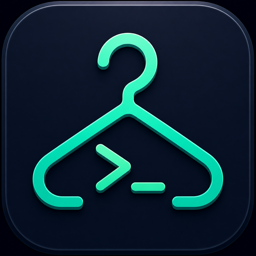

No session selected
Choose a project and start a terminal or agent
tmux ≥ 3.2 is not installed or not in PATH. CliHanger requires tmux (brew install tmux) to manage sessions.

A home for your CLI work.
Keep your terminals and coding agents together, organized by project.
Stopped. Your saved context is ready when you are.
Scrolled up